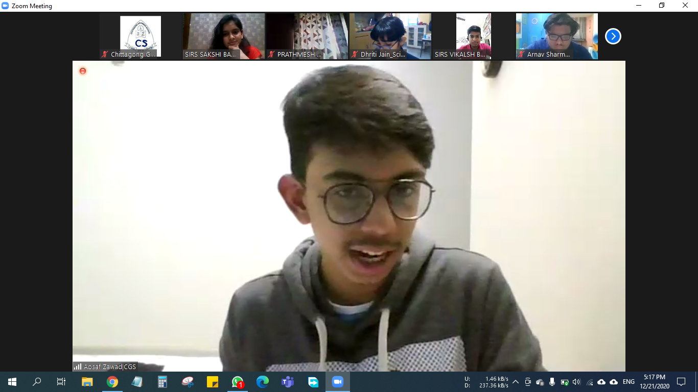
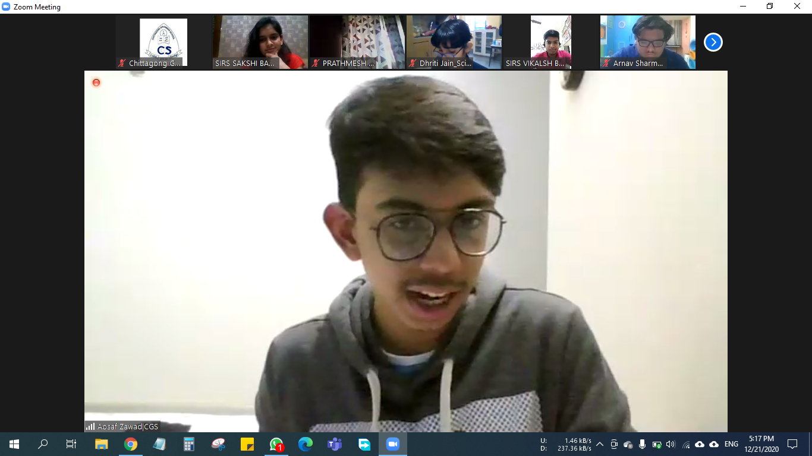

Model United Nations
Before high school, I used to be a fanatic for MUNS before the pandemic hit. I had been awarded an honourable mention during PIMUN and a verbal mention at AUWIMUN. However, all that was before the pandemic hit and also before high school. During high school, the only MUN I had been able to do before I permanently lost interest in them, which was the Indian School Al-Ghubra Model United Nations.
Virtual RS Conferences
 

During Grade 9, I had attended many virtual RS Conferences from which I have learnt a lot about different cultures and people. My first ever virtual RS conference was the one at IHS Dubai; it was by far the best conference that I had due there being the most interaction between me and people from various cultures. There was also that I attended from SAI International School, Odisha, India which had been dedicated to the International Day of Persons with Disabilities; it had given me enlightening insight into how lives of disable people and truly difficult life had become for them and how easily these problems could be overcome. However, the most significant one had to be the one from Daly College, India, which taught me the importance of journalism in our soceity and how integral the spreading of information is to each and every citizen in a country.
Duke Of Edinburgh
During 10th Grade, I had the priviledge of participating for the Duke of Edinburgh Bronze award. For this award, I have honed my skills with Python, taught Python to my friends, and did free-hand excercises to keep myself healthy. This program had enabled me to escape the monotony of schoolwork and pursue my passion. Moreover, this program has also allowed me move out of my comfort zone and visit Mati-ta, an outdoor camp in a remote place called Bhatiary, where I learned to live without technology for two whole days. Furthermore, I have also had the experience of trekking for the first time, which pushed my legs to the limit for the first time in my life. Never had I truly felt this alive.
Commonwealth Essay Competitions

My school has also given me the priviledge of participating in the Commonwealth Essay competitions in which I had been able to write to my heart's content on topics such as teenage crime rates and how the end of COVID-19 would look like. Writing these essays were just as enjoyable as they were arduous. It was definitely memorable as to how I would stay up entire nights, making sure each and every line put in had an impact; and I had definitely seen the fruits of my labour as I had been awarded the Silver Award in 2020 and the Bronze award in 2021.